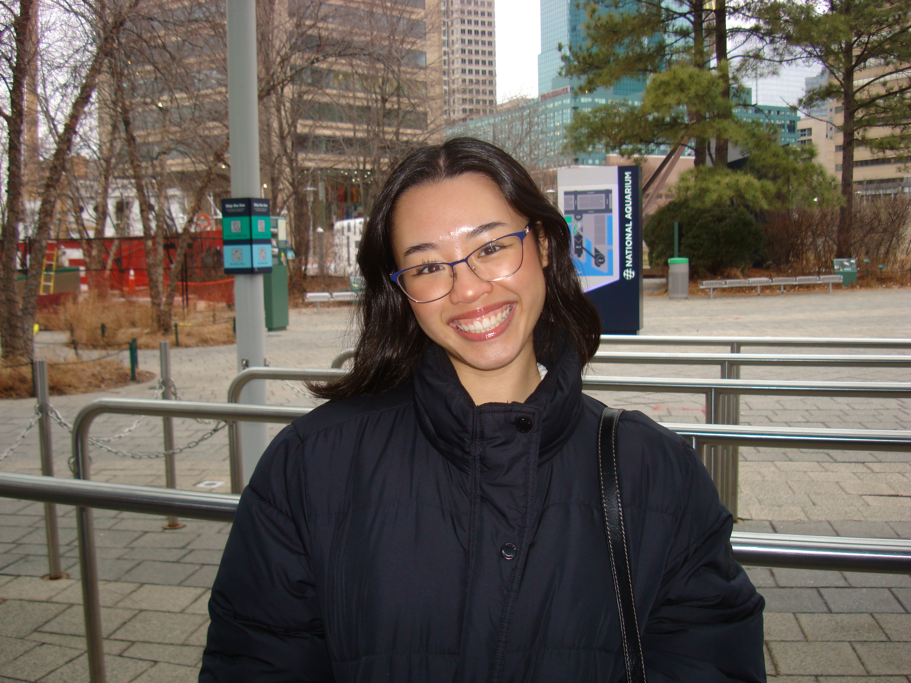

Tien Nguyen
Undergraduate student at UMD & journalist

I am an undergraduate student at the University of Maryland and the Philip Merrill College of Journalism looking to pursue investigative and international reporting. I have journalistic experience in interviewing, research and article publication from my time with student news organizations.
Staff Reporter
Her Campus
Sept. 2025 – Present
I write monthly articles for the publication focusing on society and pop culture, focusing on relevant stories and trends for the University of Maryland community. I work with editors to polish articles for publication, provide photographs for storytelling visuals and attended live events for courage. My works include “Solace and Sisterhood: Into Black Womanhood & Female Friendships” and “Fall Crafts for Your Holiday Season.”
Editor-in-Chief
The Hedge Apple
Jan. 14, 2024 – May 2025
As Editor-in-Chief for Hagerstown Community College’s literary magazine, I worked on the Spring 2025 issue, “Labyrinth.” For this project, my responsibilities included disseminating submission pieces to editors for review, working on marketing strategies with the Marketing Team to promote The Hedge Apple’s publicity on campus, brainstorming and organizing new themes for upcoming calls for submissions and doing final checks for writing pieces after they have been reviewed by the editors. “Labyrinth,” is available online at https://hedgeapplemagazine.com/order-print-copies/.
Reading Committee
The Hedge Apple
Aug. 2023, 2023 – Jan. 14, 2024
My responsibilities included evaluating the quality of writing submissions (grammar, syntax, etc). I reviewed submissions to contests and literary magazines before publication. I was part of a team to determine what pieces would be published in “Once Upon a Dream,” the literary magazine’s Spring 2024 issue.
- Bachelor of Arts, Journalism, University of Maryland, 2027
- Associate of Arts, General Studies, Hagerstown Community College, 2025
- High School Diploma, Creative Writing, Barbara Ingram School for the Arts, 2023
- Creative writing. Former Editor-in-chief of a college literary magazine. High school alumni from Barbara Ingram School for the Arts where I majored in Creative Writing for 4 years. Expertise in poetry, playwriting and fiction writing.
- Journalism. Staff reporter at a student news organization. Proficient understanding of AP Style, news writing and editing. Committed to writing truthful and factual media coverage to highlight breaking news, politics, international events and corruption.
- Photography. Proficient experience with digital and professional cameras for everyday photographs and images that tell a journalistic story.
- Photo editing with Adobe Photoshop. Proficient use of Adobe Photoshop to adjust image lighting, colors and shadows.